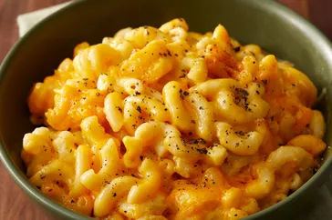

Slow Cooker Mac And Cheese

This crockpot mac and cheese recipe is creamy, comforting, and takes just moments to assemble in a slow cooker. Great for large family gatherings and to take to potluck dinners. It's always a big hit!
Just 10 ingredients (2 of which are salt and pepper!) and only 15 minutes of hands-on time.
Be prepared to wow in only 3 1/2 hours of total time!
Ingredients
- 1 (16 Ounce) package elbow macaroni
- 1/2 Cup butter
- Salt and Ground Black Pepper to taste
- 1 (16 Ounce) package shredded Cheddar Cheese, divided
- 1 (5 Ounce) can Evaporated Milk
- 2 Eggs, well beaten
- 2 Cups Whole Milk
- 1 (10 1/2 Ounce) can condensed Cheddar Cheese Soup
- 1 pinch Paprika, or as desired (Optional)
Directions
- Fill a large pot with lightly salted water and bring to a rolling boil. Stir in macaroni and return to a boil. Cook pasta uncovered, stirring occasionally, until tender yet firm to the bite, about 8 minutes. Drain and transfer pasta to a slow cooker.
- Add butter to pasta and stir until melted; season with salt and pepper. Sprinkle about 1/2 of the Cheddar cheese over pasta and stir.
- Whisk evaporated milk and eggs together in a bowl until smooth; stir into pasta mixture.
- Whisk milk and condensed soup together in a bowl until smooth; stir into pasta mixture.
- Sprinkle remaining cheese over pasta mixture; garnish with paprika.
- Cook on Low for 3 hours.
- Serve hot and enjoy!
Tips
Some slow cookers take less time. Check the edges are not getting too brown after 2 1/2 hours.
To bake in a conventional oven, pour pasta mixture into a casserole dish and bake at 350 degrees F (175 degrees C) for 45 minutes to 1 hour.